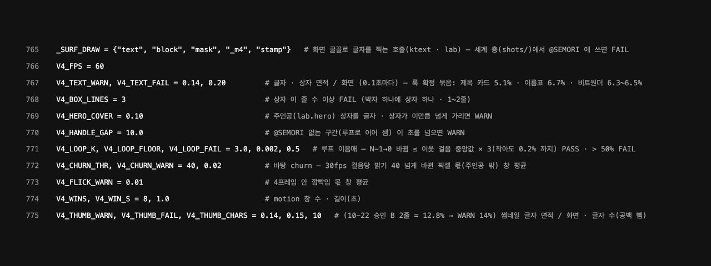
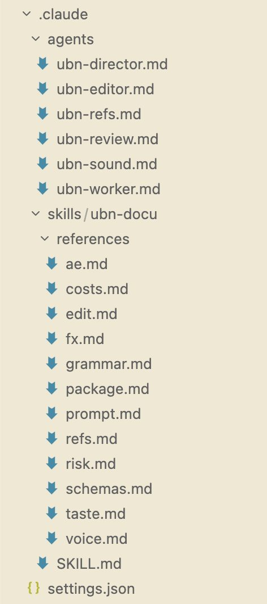

에이전트·검사 도구 · 2026
제작 시스템

판단은 문서로 남기고, 되풀이되는 판단은 도구에 반영합니다. UBN 한 작품에서 내린 결정 192건이 에이전트가 읽는 규칙이 됐고, 그중 75건은 자동 검사·편집 도구로 들어갔습니다. 에이전트가 틀리면 검사를 더하고, 검사가 저의 눈과 다르게 판정하면 검사를 고칩니다.
결정이 규칙 및 도구가 된 수
| 작품 | 결정 | 그중 제 판단 | 도구로 옮긴 결정 |
|---|---|---|---|
| UBN | 192 | 81 | 75 |
| 판정 불가 | 58 | 28 | 9 |
두 작품의 결정 기록에서 센 값입니다.
UBN 에이전트 여섯이 나눈 일

| 에이전트 | 맡는 일 | 막아 둔 것 |
|---|---|---|
| 연출 | 샷 설계, 생성 프롬프트, 받은 영상 검수, 다시 뽑을 안 | 대본·소리·편집·생성 요청 |
| 편집 | After Effects를 직접 조작해 애니매틱·조립·자막·믹스·렌더 | 샷 설계, 제가 손으로 고친 것 덮어쓰기 |
| 심의 | 애니매틱·러프컷·납품본 검토, 의견서만 작성 | 직접 고치기(읽기 전용) |
| 사운드 | 임시 내레이션, 목소리 샘플 기획, 최종 음성 준비, 효과음·음악 | 음성 생성 요청, 대본 |
| 레퍼런스 | 실제 다큐를 분석해 연출 문법집을 채움 | 회차 파일 |
| 작업자 | 도구·문서 수정 | 생성·배포 |
여섯 모두 비용이 드는 생성 도구를 쓸 수 없습니다. 생성은 제가 비용을 승인한 뒤에만 나갑니다. 영어 자막은 원문을 보지 않은 에이전트가 거꾸로 번역해 대조합니다.
네 시스템이 막는 것
| 시스템 | 무엇을 막는가 |
|---|---|
| UBN | 에이전트가 잘못 통과시킨 컷 — 배경 그림을 3D 세트와 겹쳐 자동으로 잽니다 |
| 판정 불가 | 규정을 어기거나 제가 승인하지 않은 생성 요청 — 나가기 전에 막습니다 |
| 코미디 숏폼 | 음악과 어긋난 컷 — 타격음에 맞춥니다 |
| 네모리·세모리 | 자막 잘림·이음매 끊김 같은 불량 — 하나라도 있으면 올리지 않습니다 |
자세한 사례는 각 작품 페이지에 있습니다.
Claude Code와 Codex가 함께 쓰는 스킬 정의
숏폼 제작 스킬의 정의 파일 발췌
description: > … 소재 발상 → 기획서(승인) → 에셋(텍스트로 안 될 때만) → 컷별 Seedance 2.5 720p 직행(위험한 컷만 480p 시험) → 1차 편집(음악 비트 점프컷 CapCut 프로젝트 → 사용자가 마무리) → 썸네일·캡션 → 업로드 후 EP 번호·정리까지. 크레딧은 쓸 때마다 사용자 승인을 받는다. Claude Code·Codex 공용.역할: 에이전트 = 기획·에셋·프롬프트·생성(승인 후)·1차 편집(CapCut 프로젝트)·썸네일·캡션·정리. 사용자 = 소재 선택·승인·음악·마무리 편집(CapCut)·업로드.사람과 에이전트의 몫을 스킬 첫머리에 정해 둡니다. 1차 편집은 에이전트가 CapCut 프로젝트 파일로 만들고 제가 마무리합니다.
- 남이 쓴 도구
- CGV 4인 팀 제작 허브·공용 프롬프트 태그(피노키오) · 바른손 팀 가이드라인 문서 · 교육 교재
- 오픈소스
- 2024년부터 로컬 ComfyUI에 Stable Diffusion·ControlNet 등을 직접 설치해 운용 · 피노키오 최종본 등에 사용
- 개발 경력
- 멋쟁이사자처럼 11기 프론트엔드 → 12기 운영진·디자인 팀장
- 깃허브 저장소
- 제작 시스템 저장소는 비공개(면접에서 화면으로 시연 가능) · 공개 저장소 Spec-agent(아이디어를 요구사항·설계·작업 문서로 만드는 에이전트)